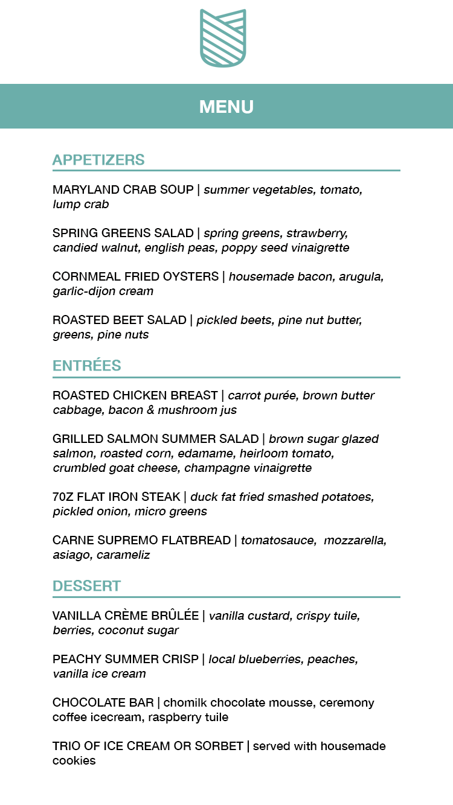
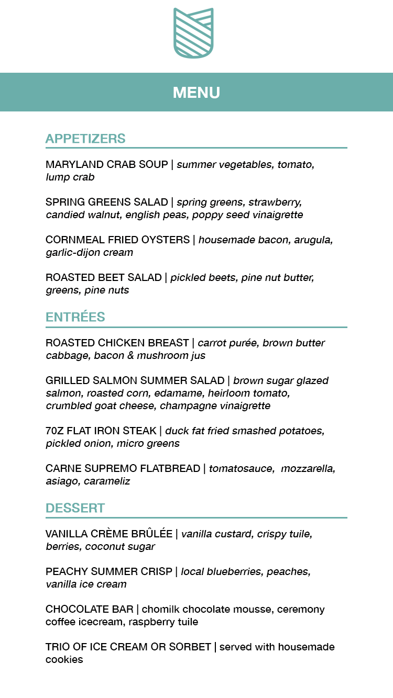

Design Mockups
Design mockups for the new Cunningham's website.
Desktop View
Mobile View

 

Re-designed Webpage
Desktop View
Through the coding of this webpage there were some difficulties through spacing and having elements land where they were intended. As well, there was an issue in which a footer was able to be placed at the bottom of the page.
Mobile View
The issues in coding associated with the desktop view also translated to the mobile view. It was difficult format the page the same way as intended in the original design mockup.